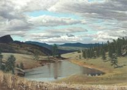

|
|
Lake is housed in the UBC Okanagan Faculty of Creative and Critical Studies
|
|
About lake journal Lake publishes fiction, poetry, critical essays, interviews, reviews and visual arts related to the environment. We are committed to high production values, a contemporary design, and an editorial vision that is in search of exceptional art and thought. We are looking for invigorating, controversial and meditative works that are about our relation to the natural world. Lake is housed in the UBC Okanagan Faculty of Creative and Critical Studies. We gratefully acknowledge the Faculty of Creative and Critical Studies at the University of British Columbia Okanagan for support and start-up funding.

Joan Heriot, Hillside Lochan on the Way to Campbell's Range, 1995, pastel drawing on paper, 21 x 15 inches |
Lake publishes fiction, poetry, critical essays, interviews, reviews and visual arts related to the environment.
|
Lake - Journal of Arts and Environment
Faculty of Creative and Critical Studies at the University of British Columbia Okanagan |
| web design by Idea Bureau |